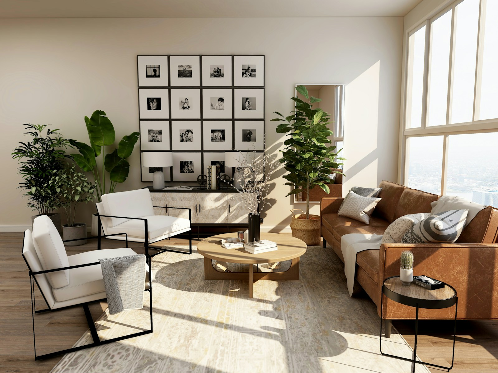
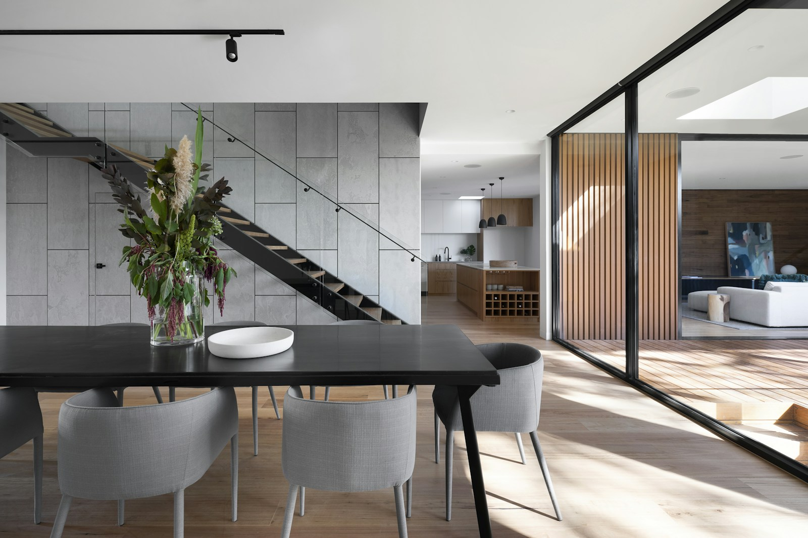

Start with
what matters.
Good decisions begin with understanding your home, your priorities and the way you want each space to work.
A considered point of view
Fornax Interior brings design and renovation together to create homes that feel personal, practical and grounded in everyday life.
THE STUDIO · SINGAPORE
Beautiful matters.
Living well matters more.
We believe the best rooms support the small rituals of a day: a slower morning, a place for everything, room to gather. The design should be thoughtful. The process should feel clear.
Good decisions begin with understanding your home, your priorities and the way you want each space to work.
Materials, storage and built-ins are considered as part of a whole, so the finished home feels calm and cohesive.
From the initial conversation through renovation, we aim to keep communication straightforward and the next step clear.

Less noise, more meaning
Every home has its own rhythm. We bring a practical eye to the planning and a careful hand to the details, making room for the things you value.
See how we work ↗A good place to begin